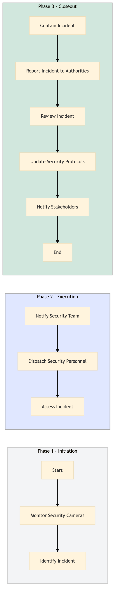

| Role | Steps |
|---|---|
| Security Officer | 1.1 1.2 2.1 2.3 3.1 |
| Security Manager | 2.2 3.2 3.3 3.4 |
| General Manager | 3.5 |
| Step | Name | Role | System | Input | Output | KPI | Dec? | Exc? | Pain Point / Risk |
|---|---|---|---|---|---|---|---|---|---|
| 1.1 | Monitor Security Cameras | Security Officer | Assa Abloy VingCard, Honeywell INNCOM | Live video feed from perimeter and car park cameras | Incident report | Response time less than 2 minutes | Y | N | High volume of camera feeds to monitor |
| 1.2 | Identify Incident | Security Officer | Oracle OPERA Cloud, Assa Abloy VingCard | Incident report from Step 1.1 | Incident classification and priority | Classification within 5 minutes | Y | N | Accurate identification of incidents in real-time |
| 2.1 | Notify Security Team | Security Officer | Oracle OPERA Cloud, Honeywell INNCOM | Incident classification and priority from Step 1.2 | Alert to security team | Notification within 1 minute | Y | N | Effective communication with the security team |
| 2.2 | Dispatch Security Personnel | Security Manager | Oracle OPERA Cloud, Honeywell INNCOM | Alert from Step 2.1 | Dispatch order to security personnel | Dispatch within 2 minutes | Y | N | Timely dispatch of security personnel |
| 2.3 | Assess Incident | Security Officer | Oracle OPERA Cloud, Assa Abloy VingCard | Incident report from Step 1.1 and dispatch order from Step 2.2 | Incident assessment report | Assessment within 5 minutes | Y | N | Detailed incident assessment |
| 3.1 | Contain Incident | Security Officer | Oracle OPERA Cloud, Assa Abloy VingCard | Incident assessment report from Step 2.3 | Containment actions taken | Containment within 10 minutes | Y | N | Effective containment of the incident |
| 3.2 | Report Incident to Authorities | Security Manager | Oracle OPERA Cloud, Honeywell INNCOM | Incident report from Step 1.1 and containment actions from Step 3.1 | Police report | Report within 20 minutes | Y | N | Accurate reporting to authorities |
| 3.3 | Review Incident | Security Manager | Oracle OPERA Cloud, Honeywell INNCOM | Incident report from Step 1.1 and police report from Step 3.2 | Incident review report | Review within 24 hours | Y | N | Comprehensive incident review |
| 3.4 | Update Security Protocols | Security Manager | Oracle OPERA Cloud, Honeywell INNCOM | Incident review report from Step 3.3 | Updated security protocols | Protocols updated within 7 days | Y | N | Effective protocol updates |
| 3.5 | Notify Stakeholders | General Manager | Oracle OPERA Cloud, Honeywell INNCOM | Incident review report from Step 3.3 and updated protocols from Step 3.4 | Stakeholder notification | Notification within 2 days | Y | N | Effective communication with stakeholders |
A structured process document for managing perimeter and car park security at a Marriott full-service hotel using Oracle OPERA Cloud PMS.